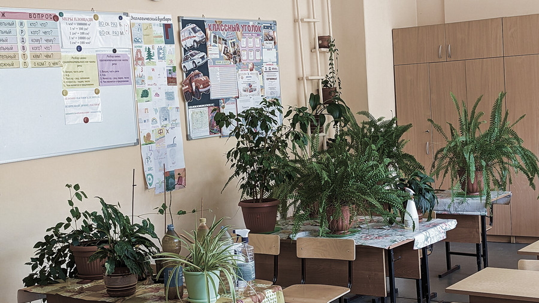

途中でやめたとき、いくら返るのか
語学教室・学習塾・家庭教師・パソコン教室の契約には、いつでも解約できる決まりと、事業者が請求できる金額の上限が政令で置かれています。

学びのサービスをやめたいと思ったとき、返ってくるお金の額は、そのときの話し合いで決まるわけではありません。契約の型が決まっていれば、法律と政令が先に上限を決めています。
ここで扱うのは、特定商取引法が「特定継続的役務提供」と呼んでいる契約です。語学教室・学習塾・家庭教師・パソコン教室は、期間と金額の条件を満たすとこの型に入ります。
中途解約はいつでもできる、と書いてある
特定商取引法の第49条第1項は、クーリング・オフの期間が過ぎたあとでも、将来に向かって契約を解除できると定めています。理由を説明する義務も、相手の同意も条文には出てきません。
同じ条の第2項が、解除にともなって事業者が請求できる額の上限を政令に預けています。契約書に「中途解約はできない」と書いてあっても、この条文より強くなることはありません。
上限は2つに分かれる
上限の決まり方は、役務の提供が始まる前か、始まったあとかで変わります。始まる前なら定額だけ、始まったあとは、すでに受けたぶんの対価に、下の表の額を足したものが上限です。
表の右の欄は「いずれか低い額」で決まります。契約の残りが少ないときは割合のほうが、残りが多いときは定額のほうが低くなり、そちらが上限になります。
| 役務 | 分類 | 提供が始まる前 | 提供が始まったあと |
|---|---|---|---|
| 語学教室 | 学び | 15,000円 | 5万円 または 契約残額の20％ |
| 家庭教師 | 学び | 20,000円 | 5万円 または 1か月分の対価 |
| 学習塾 | 学び | 11,000円 | 2万円 または 1か月分の対価 |
| パソコン教室 | 学び | 15,000円 | 5万円 または 契約残額の20％ |
| エステティック | その他 | 20,000円 | 2万円 または 契約残額の10％ |
| 美容医療 | その他 | 20,000円 | 5万円 または 契約残額の20％ |
| 結婚相手紹介 | その他 | 30,000円 | 2万円 または 契約残額の20％ |
この額は上限であって、必ずこれだけ取られるという意味ではありません。契約書面にこれより低い額が書いてあれば、低いほうが効きます。
Fig.｜提供が始まる前に解約したときの上限額を、長さで比べる
教材や機器もあわせて解約できる
教室の契約とセットで買った教材や機器は「関連商品」と呼ばれ、政令が役務ごとに中身を決めています。語学教室なら語学の教材や書籍、パソコン教室なら電子計算機と付属品です。
関連商品は、本体の契約をクーリング・オフしたり中途解約したりするときに、あわせて解除できます。ただし、すでに使ってしまったものについては扱いが変わるため、開ける前に確かめるほうが確実です。
どこを見れば分かるか
確かめる先は、契約の前に渡される概要書面と、契約のあとに渡される契約書面の2枚です。特定商取引法の第42条が、事業者にこの2枚を渡すよう義務づけています。
この2枚には、解除の条件や請求される額の計算方法が書かれます。受け取っていない場合や、書いてある内容が表と食い違う場合は、消費者ホットライン188で相談できます。
特定商取引法 第41条・第42条・第48条・第49条（e-Gov法令検索／2026年9月2日に確認）
特定商取引法施行令 第16条および別表第四・別表第五（同上）
消費者庁「特定商取引法ガイド ── 特定継続的役務提供」（2026年9月2日に確認）
金額は上限として政令に定められた額です。実際に請求される額は契約書面の記載によります。制度は改正されることがあるため、申し込む前に原文をご確認ください。
ここに広告を置きます。広告が入っても、記事の順番や書いてある内容は変えません。